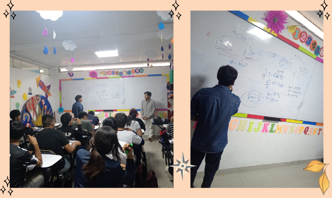

INTRODUCCIÓN
La física aplicada permite entender el mundo real a través de principios científicos. En este proyecto de RSU buscamos transmitir esos conocimientos de manera didáctica, integrando conceptos con tecnología y dinámicas prácticas.

JUSTIFICACIÓN
Los estudiantes de quinto de secundaria, se encuentran en la etapa de adolescencia, un periodo descrito por la psicología como una fase crucial que según teorías como la de Erik Erikson, atraviesan el estadio de Identidad vs. Confusión de roles, donde buscan definirse, explorar intereses y reforzar su autonomía. A nivel cognitivo, de acuerdo con Jean Piaget, ya operan mayormente en el estadio de las Operaciones Formales, lo que les permite procesar conceptos científicos complejos, crear hipótesis, analizar causas y consecuencias, y vincular la teoría con situaciones reales. En este contexto, las dinámicas prácticas y experiencias interactivas se vuelven altamente efectivas, pues responden a necesidades psicológicas clave de esta edad: -Estimulación sensorial y cognitiva -Participación activa -Necesidad de reconocimiento -Aprendizaje significativo basado en la experiencia -Motivación intrínseca y exploración personal.

OBJETIVOS
Objetivo General
Promover el aprendizaje y la comprensión de la física aplicada al mundo real en estudiantes de nivel escolar, integrando herramientas tecnológicas y enfoques propios de la Ingeniería de Sistemas para fortalecer su interés científico y su capacidad de relacionar la teoría con situaciones prácticas.
Objetivos Específicos
- Presentar ejemplos concretos de física aplicada en áreas vinculadas a la Ingeniería de Sistemas.
- Desarrollar actividades prácticas e interactivas basadas en Cinemática y Dinámica.
- Fomentar la vocación científica mediante recursos digitales y páginas web didácticas.
- Evaluar el impacto educativo a través de participación y retroalimentación estudiantil.

ACTIVIDADES
CINEMÁTICA
.png)
DINÁMICA
.png)
FUERZAS

TRABAJO Y ENERGÍA

PÁGINA WEB
.png)
.png)
Enlace de la Página Web: https://leninedu01.github.io/Ingenieria2025/
COMPROBACIÓN DE LO APRENDIDO
.png)
CONCLUSIONES
La física, aplicada a situaciones reales, permite a los estudiantes comprender de manera profunda cómo funciona el mundo que los rodea. Mediante actividades prácticas y el uso de tecnología, se logra que los conceptos sean más accesibles y significativos, fortaleciendo su pensamiento científico y su capacidad de resolver problemas.

FRASE FINAL
“La ciencia no solo explica el mundo… te da el poder para transformarlo.”